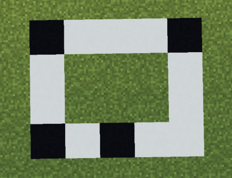
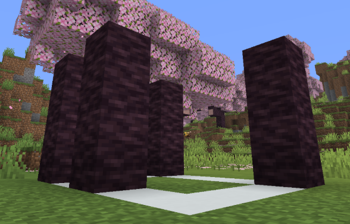
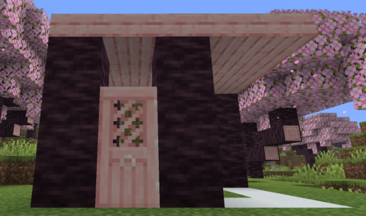
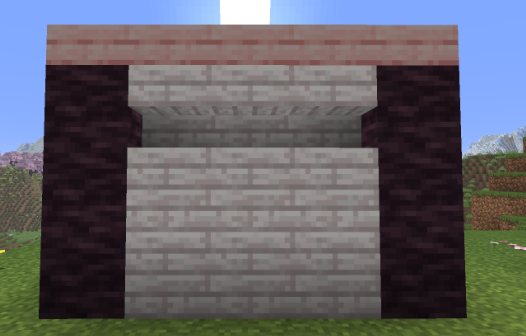
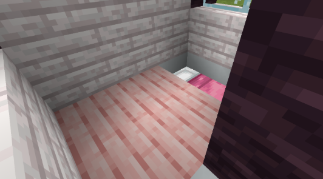
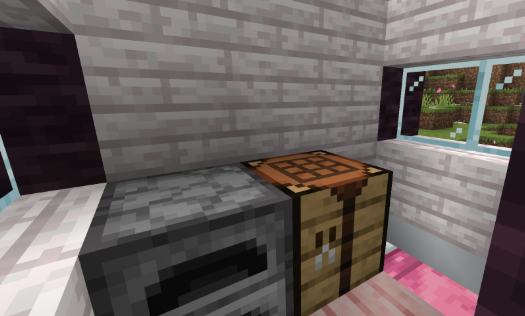

House Guide
Build a compact starter house using the layout from your guide, then furnish it with key utility blocks.
-
1. Find a flat 4 by 5 area of ground for your foundation.

-
2. Mark out the foundation layout using temporary blocks.

-
3. On each marked black square, place three cherry logs vertically to make pillars.

-
4. Build a 4 by 5 cherry slab platform on top of the pillars for the roof layer.

-
5. Place a cherry door between the two front pillars that are one block apart.

-
6. Aim at the inner side of the roof edge blocks to prep stair orientation.

-
7. Place pale oak stairs around the roof in a full loop.

-
8. Place pale oak planks in a loop around the bottom of the house.

-
9. Fill the back wall gaps with pale oak planks.

-
10. Fill front corner wall gaps with glass panes.

-
11. Fill left wall gaps with glass panes to complete the shell.

-
12. Break the six interior floor blocks.

-
13. Place the bed in the far-right area inside the house.

-
14. Fill the 2 by 2 floor hole with cherry planks.

-
15. Place a furnace and crafting table in the left back corner.

-
16. Place three barrels along the back wall directly under the roof.

-
17. Place a lantern on the back wall for interior lighting.